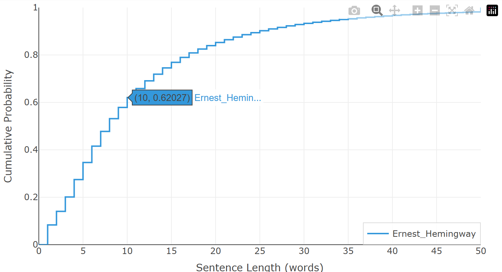

图表实际上意味着什么？
在上一篇中，我们通过比较来探讨如何使用这两张图表。现在让我们打开黑匣子。曲线上任何一个点到底代表什么？以下是数学原理、算法以及如何读懂你所看到的内容。
图表 1：句子长度累积分布函数

将你的文本分割成句子后，我们统计每个句子包含多少个词。令 p(i) 为恰好有 i 个词的句子所占比例。累积分布为：
$$P(n) = \sum_{i=1}^{n} p(i)$$
用通俗的话说：P(n) 是包含 n 个或更少词语的句子所占的比例。
以上图中高亮的点为例。其坐标显示为 (10, 0.62)，这意味着：文本中 62% 的句子长度不超过 10 个词。 其余 38% 更长。曲线在句子集中的地方上升最快——在低词数处出现陡峭段表明偏好短句。
这条线以阶梯函数（水平-垂直）的形式绘制，因为句子长度是离散的：一个句子不能有 10.5 个词。在整数值之间，比例保持不变，直到达到下一个句子长度。
句子如何分割
一种朴素的方法是在每个句号处分割。但这会在 Mr. Smith、U.S. policy 或 e.g. this example 上出错。我们的句子分割器使用两阶段策略：
- 识别非边界。常见缩写（Mr.、Mrs.、Dr.、Prof.、e.g.、i.e.、etc.）、首字母缩写（J. K. Rowling）和数字上下文（3.14、$5.99）被识别并用占位符临时替换，以免被误认为句子结尾。
- 在真正的边界处分割。只有真正的句子结束标点——
.!?后跟空白和大写字母——才触发分割。然后占位符被恢复为原始形式。
这就是为什么即使对于缩写、对话或学术引用密集的文本，你看到的句子计数也是可靠的。
图表 2：词频累积分布函数

你文本中的每个词首先被词形还原——还原为其词典基础形式。然后将每个词元在参考频率表（COCA 语料库，包含 4,380 个最常见英语词汇，从 1 = 最常见到 4,380 = 最不常见进行排名）中查找。表中未找到的词被视为更加罕见。
同样的累积逻辑适用，这次是按频率排名累积。G(r) 是你的文本中位于前 r 个最常见英语词汇中的词所占的比例。
以高亮的点为例。其坐标显示为 (890, 0.88)，这意味着：你使用的 88% 的词属于英语中最常见的 890 个词。 其余 12% 更罕见。一条早早上升并保持高位的曲线表明词汇来自日常语言；一条滞后的曲线表明罕见词的比例较高。
词汇如何被词形还原
如果 run、runs 和 running 被计为三个不同的词，词频分析就会崩溃。词形还原通过将每个屈折形式映射到单个基础词元来解决这个问题。我们的词形还原器结合了两种方法：
- 不规则映射。一个查找表处理高频不规则词：went → go、better → good、mice → mouse 以及数百个其他词。缩略形式也会被解析：don't → do、I'll → I。
- 后缀剥离。规则屈折变化在精心排序的管道中被移除：-ing、-ed、-s、-es、-ies、-ly、-er、-est 等。每一步剥离都会检查一个NO_STRIP 保护列表——像 interesting（不是 "interest"）或 visited（不是 "visite"）这样的词——以防止过度词形还原。
静默 e 恢复规则确保 making 变为 make（而不是 "mak"），filed 变为 file（而不是 "fil"）。整个操作在你的浏览器本地运行——没有任何词离开你的设备。
为什么是阶梯线？
两张图表都使用阶梯线渲染而非平滑曲线。这在数学上是正确的：句子长度和频率排名都是离散的整数变量。平滑样条曲线会暗示不可能存在的值（比如一个句子有 10.3 个词，或者一个排名在 890.6 的词）。阶梯形状不是风格选择——它是数据实际呈现的样子。
为自己阅读图表
下次你运行分析器时，将鼠标悬停在任一曲线上的任意点。坐标会告诉你关于你写作的一个精确统计事实。当你并排比较两条曲线时，这些坐标对之间的差异就是风格差距。这就是全部的意义。